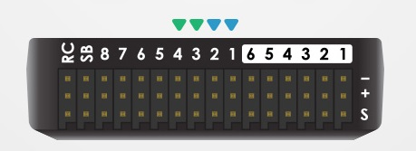

Taller presencial 1: ensamblaje visible y primera revisión
Reconstruir la secuencia de ensamblaje y justificar comprobaciones mecánicas, eléctricas y de configuración.
El expediente entra al taller
El montaje comienza con un objeto identificado: estructura, componentes, revisiones y documentación preparada. El docente tiene un equipo de demostración desmontado hasta el nivel que puede completar en cuatro horas y otro conjunto de referencia o de reserva cuando esté disponible. La práctica muestra decisiones y comprobaciones; no depende de construir simultáneamente un dron por cada uno de los 25–30 alumnos.
Roles de observación por equipo
| Rol | Qué registra | Qué explica |
|---|---|---|
| Componentes | Modelo y revisión mostrados | Compatibilidad elegida |
| Montaje | Orden y acceso | Razón de la secuencia |
| Electricidad | Origen, destino y medida | Esperado frente a observado |
| Configuración | Pantalla y correspondencia | Qué está representado |
Los alumnos se organizan en aproximadamente seis equipos de cuatro o cinco. Rotan los roles de observación y registro. Gerard conserva el control del banco energizado y de las herramientas de demostración; no se planifican varias estaciones de soldadura atendidas simultáneamente por un único docente. Si se habilita una práctica breve individual, se organiza aparte sobre muestras y según la capacidad real de supervisión.
El resultado académico de este presencial es explicar el proceso y sus pruebas con evidencia. Se distingue haber observado una técnica de haberla practicado personalmente. Esa precisión permite enseñar bien con los recursos disponibles y describir honestamente la experiencia del curso.
Agenda de cuatro horas
Taller presencial 1
| Minutos | Demostración | Evidencia del alumno |
|---|---|---|
| 0–25 | Inventario y revisión del expediente | Lista contrastada |
| 25–70 | Presentación mecánica y fijaciones | Secuencia y fotos identificadas |
| 70–115 | Preparación de conductores y soldadura | Criterios de una unión |
| 115–160 | Arnés y revisión sin energía | Tabla origen–destino |
| 160–215 | Primera alimentación e inspección USB | Resultado esperado y observado |
| 215–240 | Correcciones y cierre | Acta y preguntas para sesión 8 |
Las piezas y los conductores se preparan con anticipación, dejando visible una muestra completa de la operación que se desea enseñar. Una demostración de soldadura es más útil si se ve la superficie, el aporte y la revisión que si el grupo solo observa una placa ya terminada. La cámara de detalle o una pantalla permite que el fondo del aula siga el proceso.
El instructor prepara también un caso sin energía que represente un error: un cable sin etiqueta, un conector de referencia invertida en la ficha o una unión defectuosa sobre muestra. La discusión termina con un criterio de corrección, sin introducir ese defecto en el vehículo que se pretende volar. El calendario deja el vuelo para la sesión 8.
Ensamblaje: las decisiones que deben verse
- Presenta bastidor, motores, FC, ESC y batería con sus referencias. Separa tornillería por función.
- Comprueba encajes, longitud de tornillos, paso de cables y acceso al USB antes de fijar definitivamente.
- Define orientación de la FC y posición de módulos, antenas y batería. Registra el frente del vehículo.
- Prepara conductores y uniones según la herramienta y material del banco. Muestra una unión completa en una muestra.
- Une las rutas previstas, inspecciona puentes y hilos, y aplica aislamiento y alivio de esfuerzo donde corresponda.
- Contrasta el conjunto con el esquema y conserva una foto legible de lo que quedará oculto.
No se establece un par de apriete universal ni se recomienda un fijador para todos los materiales. La demostración usa las indicaciones del fabricante y la herramienta apropiada. El alumno aprende a localizar el dato o a declarar que necesita consultarlo. Una pieza aparentemente firme puede seguir teniendo un montaje incorrecto si un tornillo invade el motor o una arista actúa sobre un cable.
La evidencia que se pierde
Una placa tapa el arnés al cerrar el bastidor. ¿Qué conviene conservar antes?
Ver razonamiento del caso
La correspondencia de contactos, la inspección y una foto del recorrido con las referencias visibles. No se reemplaza el esquema por una fotografía borrosa.
Revisión eléctrica y encendido controlado

Con el conjunto sin batería se revisan polaridad, continuidad según circuito, contactos y aislamiento. Después se observa una primera alimentación con el método de limitación o supervisión apropiado al banco. Se comprueban las tensiones de las líneas que alimentarán cargas sensibles. Un comportamiento inesperado se registra y se investiga antes de continuar. La lectura del multímetro necesita indicar los dos puntos medidos.
Registro de primera alimentación
| Dato | Esperado | Observado |
|---|---|---|
| Entrada del sistema | Según paquete y manual | Medida del taller |
| Línea regulada | Especificación de esa salida | Medida y referencia |
| Estado de la FC | Inicio reconocido | Indicadores y conexión |
| Comportamiento anormal | Criterio de interrupción | Síntoma y acción |
Se separa esta etapa de una prueba de motores. La primera alimentación demuestra un conjunto acotado de condiciones, no la aceptación de vuelo. Para cambiar una conexión se retira la energía y se conserva la referencia de la modificación.
Configuración que corresponde al montaje
Una vez identificada la alimentación, la conexión USB permite contrastar placa, versión y estado con el expediente. Se recupera la copia de configuración adecuada al vehículo, se verifica orientación y se relaciona el puerto del receptor con el esquema. Los cambios se anotan. No se carga un archivo de otro dron solo porque ambos tienen cuatro motores.
Traspaso a la última sesión
| Elemento | Qué debe quedar listo |
|---|---|
| Montaje | Fijaciones y recorrido revisados |
| Electricidad | Pinout y primera alimentación documentados |
| Software | Equipo, versión y copia identificados |
| Pendientes | Causa y comprobación siguiente |
| Vuelo | Vehículo de demostración elegido por el docente |
Armado y aceptado
El dron enciende y la aplicación conecta. ¿Ya pasó todas las pruebas?
Ver razonamiento del caso
No. Falta contrastar canales, salidas, sentidos, modos y las condiciones previstas para la demostración. La sesión 8 parte del acta de este taller.
El vehículo utilizado para vuelo no tiene que ser el que quedó recién ensamblado delante del grupo. Gerard puede usar un equipo preparado y revisado con anticipación, mientras el conjunto didáctico conserva pendientes explicados. Así el alumno ve la diferencia entre terminar un montaje y aceptar una configuración para una operación concreta.
Cierre y discusión del taller
- Cada equipo presenta una decisión de montaje y la evidencia que la respalda.
- Señala una medida con unidad y referencia.
- Identifica una operación observada y otra realizada personalmente, si la hubo.
- Explica un cambio aplicado y el criterio que permitió aceptarlo.
- Conserva la lista de pendientes para la sesión 8 y quién los resolverá.
La evaluación valora la explicación del proceso y la calidad del registro. Una fotografía de una soldadura no demuestra por sí sola que su autor domine la técnica. Si más adelante MECRO ofrece un taller de práctica individual, tendrá otra organización de puestos, herramientas y supervisión. En este curso la descripción comercial conserva el carácter demostrativo de ambos presenciales.
Para investigar, elige un cambio de integración pequeño: acceso al USB, sujeción de batería o identificación de arnés. Explica qué mejoraría y cómo lo comprobarías. No se propone añadir piezas por cantidad. La última sesión revisará cómo esas decisiones se relacionan con el funcionamiento y con una demostración de vuelo básico.
Práctica guiada
- Mostrar un inventario que coincida con el objeto preparado.
- Demostrar presentación mecánica y una unión sobre muestra visible.
- Contrastar arnés y alimentación con el esquema, antes de energizar.
- Cerrar un acta de montaje con pendientes y vehículo de demostración.
Preguntas de cierre
¿Observar una soldadura equivale a haberla practicado?
No. Se registra por separado la experiencia observada y la ejecutada.
¿Encender prueba aptitud de vuelo?
No. Es una comprobación parcial dentro de una secuencia.
¿Debe volar el conjunto recién ensamblado?
Solo si ha pasado las comprobaciones; puede utilizarse otro equipo ya preparado.
Entrega
Registro del taller: secuencia, esquema contrastado, medidas y acta de pendientes.
Fuentes para ampliar
[BF] Betaflight. Setup Guide: organización de la puesta en marcha.
[APPOWER] ArduPilot. Powering the Pixhawk: ejemplo específico de alimentación.
[APMOTOR] ArduPilot. Conexión, orden y sentido de motores.
[LIPO] Tattu / Gens Ace. Manual de baterías UAV y manejo del paquete.
[SOLDER] Bill Earl / Adafruit. Adafruit Guide To Excellent Soldering: Making a good solder joint.